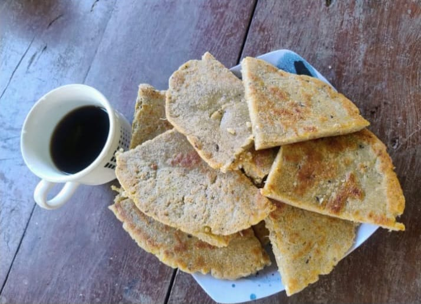

Eco-friendly BagsBolsos Ecológicos
Hand-woven with 100% natural fique fiber. Durable designs that blend contemporary fashion with weaving techniques inherited from our grandparents.
Tejidos a mano con fibra de fique 100% natural. Diseños duraderos que combinan la moda contemporánea con técnicas de tejido heredadas de nuestros abuelos.

Fique ThreadsHilos de Fique
Small details carrying great traditions. Keychains and mini-bags woven with vibrant colors that reflect the biodiversity of our land.
Pequeños detalles que llevan grandes tradiciones. Llaveros y mini-bolsos tejidos con colores vibrantes que reflejan la biodiversidad de nuestra tierra.

Peeled Corn ArepasArepas de Maíz Pelado
Our traditional recipe with pork rinds. Selected corn cooked over a wood fire to guarantee that authentic flavor that represents Santander's gastronomy.
Nuestra receta tradicional con chicharrón. Maíz seleccionado cocido a leña para garantizar ese sabor auténtico que representa la gastronomía santandereana.

Multi-purpose BasketsCanastos Multiusos
Functional pieces for the home. Ideal for organization or decoration, crafted with basketry techniques that guarantee strength and natural beauty.
Piezas funcionales para el hogar. Ideales para organización o decoración, elaboradas con técnicas de cestería que garantizan resistencia y belleza natural.